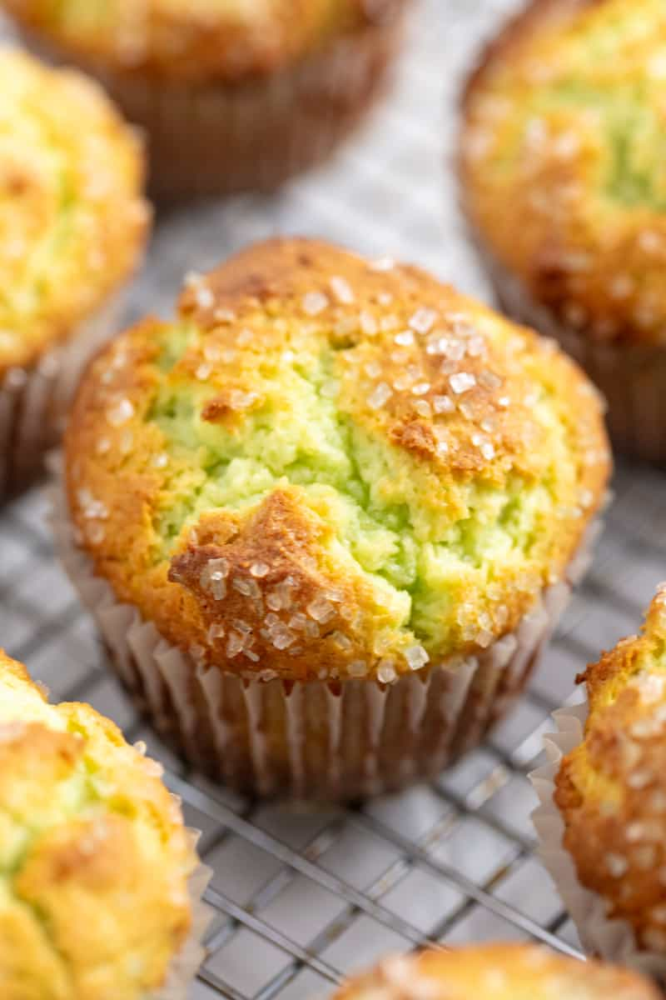

Pstachio Muffin Recipe

Description
Do something that scares yourself everyday. Like skyding, speed dating, or just makeing some delicious muffins using offbeat ingredients. idk. do you. Although if you are here, you probably went with the muffins. These pistachio sugarfree vegan muffins are suprisingly delicious and simple to make. Thinking outside of the bread box, these muffins will put a smile on anyones face as they are warm, sweet, and nutty. With green interior peaking through a warm familiar exterior, you will have friends and family asking " whats in these?". Don't tell them, its our little secret. think muffins are the less interesting cupcake? think again.
Ingredients
- 1/2 cup olive oil
- 1 cup stevia
- 1/2 cup apple sauce
- 1/2 teaspoon almond extract
- 1 cup soymilk
- 2 cups all-purpose flour
- 1 box sugar free instant pistachio pudding
- 1/2 teaspoon salt
- 2 teaspoons baking powder
Steps
- Preheat oven to 425 degrees. spray your muffin pan, or use muffin liners if you are like that.
- In a medium bowl, whisk together oil, stevia, apple sauce, almond extract, and milk until combined and fluffy.
- In a small bowl, mix your flour, pudding mix, baking powder, and salt. Really get those dry ingredients combined.
- Spoon your dry into your wet ingredients and mix well. lumps are okay, as long as its mostly mixed well. you know yourself.
- add a large spoonful of batter into your muffin pan. 3/4s the way if this is your first rodeo.
- bake at 425 for 6 minutes, then reduce heat to 350 and cook another 11 to 12 minutes. careful not to overcook, and follow toothpick rules.
- let them chill on a cooling rack (or in the pan if your lazy like me) for about 5 minutes before you try to tranfer them. serve warm and enjoy.